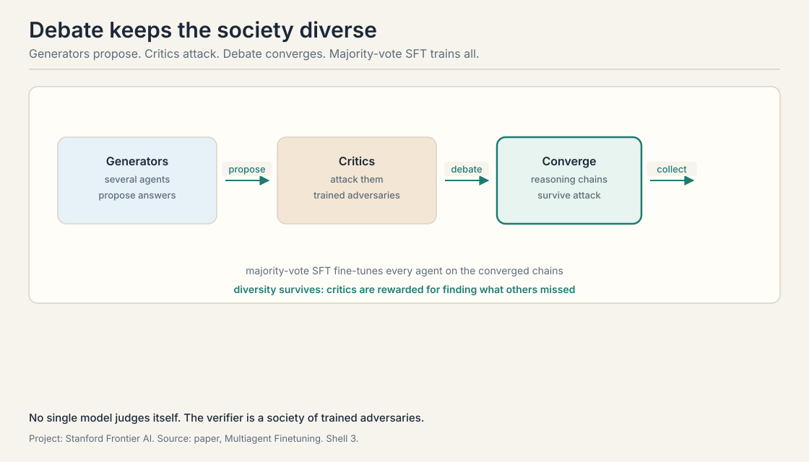
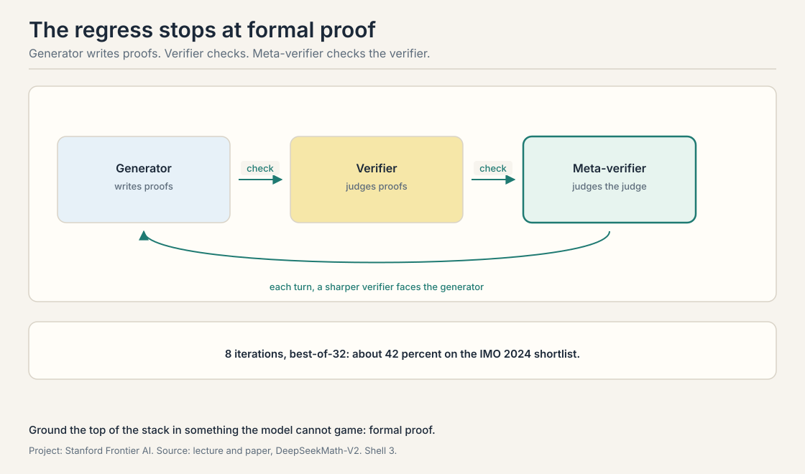
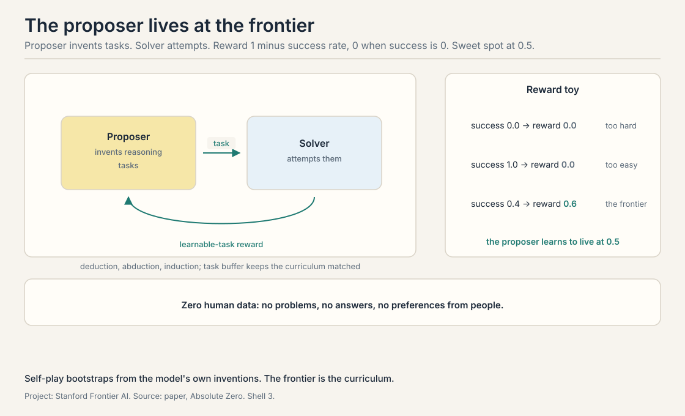

Lecture 8: Future Research Areas
Video blocked (ad-blocker or local file mode).
Watch on YouTubeVideo not loading? Watch on YouTube
Multi-agent fine-tuning, DeepSeekMath-V2 meta-verification, Absolute Zero reinforced self-play, and open problems: non-verifiable domains, intelligence per watt, continual learning.
The course’s question, restated
Builds on: All seven lectures, restating the question they built machinery to answer.
Can agents improve themselves? Seven lectures built the machinery: sample at test time, verify, plan, search, train on the winners. This lecture points at what comes next. Three research directions with results, then the open problems the field has not cracked.
Agents teaching agents: multi-agent fine-tuning
Builds on: The generator-verifier loop, with the verifier externalized as a society of critics.
Multi-agent fine-tuning replaces the single model with a society. Several generator agents propose answers. Several critic agents attack them: a generator-critic society. The agents debate: each round, generators defend and revise, critics probe for flaws. Then majority-vote SFT: collect the reasoning chains the debate converged on and fine-tune every agent on them.
The finding the lecture stresses is diversity preserved. Single-model self-training collapses: the model converges on one style and the gains stall, the entropy collapse of Lecture 6 in social form. Debate keeps the agents different from each other, because each critic is rewarded for finding what the others missed. The system improves without collapsing into one voice. The lecture reports transfer to GSM8K: the debated reasoning patterns help on math the agents were not directly trained on.
The mechanism is the course’s generator-verifier loop with the verifier externalized. No single model judges itself. The critics are the verifier, and they are trained adversaries, not static tests.

Verifiers checking verifiers: DeepSeekMath-V2
Builds on: Multi-agent debate’s externalized verifier, with a meta-verifier checking the checker.
Lecture 6’s DeepSeekMath trained a generator with GRPO. The ceiling was the verifier: a learned reward model can be gamed. DeepSeekMath-V2 answers with a meta-verifier, a system that checks the checker.
The loop has three roles. The generator writes proofs. The verifier checks them. The meta-verifier checks the verifier’s judgments. The lecture reports the training curve: over 8 iterations the proof score climbs, and with best-of-32 sampling the system reaches about 42 percent on the IMO, International Mathematical Olympiad, 2024 shortlist. Each turn, the generator faces a sharper verifier, and the verifier faces a sharper meta-verifier. The regress stops because the top of the stack is checked against formal proof: mathematics has a ground truth the loop cannot talk its way past.
The published paper, November 2025, goes further than the lecture’s snapshot: gold-level performance on IMO 2025 and 118 of 120 on Putnam 2024. The lecture’s 42 percent is the training-curve figure from Autumn 2025. The paper’s medals are what the loop became. The direction is the point: when the verifier is learned, verify the verifier, and ground the top in something the model cannot game.

Absolute Zero: no human data at all
Builds on: Every method so far, which needed human data somewhere, asking what happens with none.
Every method so far needed human data somewhere: problems, answers, constitutions, preferences. Absolute Zero asks what happens with none. Two roles, both played by the model: a proposer-solver pair. The proposer invents reasoning tasks. The solver tries to solve them. That is self-play: the model plays both roles, proposer and solver improving by training against each other with no human data. The proposer is rewarded for tasks the solver solves about half the time: the reward is 1 minus the average success rate, except an average success rate of exactly 0 pays 0 instead of 1, so trivial tasks and impossible tasks both pay nothing. The sweet spot is the frontier of the solver’s ability.
The tasks come in three kinds. Deduction: given rules, draw the conclusion. Abduction: given observations, find the rules. Induction: given examples, find the pattern. The proposer draws from a task buffer, a curriculum of past tasks that keeps the difficulty matched to the solver. The result the lecture reports: state of the art on reasoning benchmarks with zero human data. No problems written by people. No answers. No preferences. The loop bootstraps from the model’s own inventions.
The worked toy for the reward: solver success rate 0.0, reward 0, too hard. Success rate 1.0, reward 0, too easy. Success rate 0.4, reward 0.6, the frontier. The proposer learns to live at 0.5.

Open-endedness: AlphaEvolve, recapped
Builds on: Absolute Zero’s self-play, with the verifier as the world and no fixed task at all.
The lecture recaps AlphaEvolve, DeepMind’s coding agent for scientific discovery, as the open-ended direction. The system evolves code: propose a change, run it, keep what works, repeat over thousands of generations. The results the lecture cites: a 4x4 complex matrix multiplication in 48 scalar multiplications, the first improvement over Strassen’s algorithm in 56 years, plus data-center scheduling gains and hardware circuit simplifications. The full lecture on it is not in this course’s sources. The recap here is the lecture’s own. The idea earns its place: evolution is the self-improvement loop with the verifier as the world and no fixed task at all.
Non-verifiable domains: where the loop has no anchor
Builds on: the verifier regress, which stops at ground truth in math but has nowhere to stop elsewhere.
The lecture closes with problems, not results.
Non-verifiable domains. The whole loop assumes a verifier: tests, proofs, answer keys. Chip design, wet-lab biology, creative work: the feedback is slow, expensive, or subjective. The lecture names this as the boundary of everything the course taught. Extending the loop past verification is the field’s hardest problem.
Intelligence per watt and hybrid routing
Builds on: non-verifiable domains, the capability boundary, with the economics boundary alongside it.
Intelligence per watt. Capability is not the only metric. The lecture reports a striking measurement: local models with 20 billion or fewer active parameters handle 88.7 percent of a million sampled ChatGPT queries. Over two years, 3.1 times the accuracy times 1.7 times the hardware efficiency gave 5.3 times the intelligence per watt. Meanwhile demand exploded: Google’s token volume went from 160 trillion in February to 1.3 quadrillion in October, and total demand rose 1,200 times. The future the lecture sketches is hybrid routing: small local models for the easy 88.7 percent, frontier models in the cloud for the rest, with the router as the new research problem.
Continual learning: the loop that never stops
Builds on: intelligence per watt, the economics of running the loop, with the missing capability that would let the loop run forever.
Continual learning. Models train once and freeze. The world does not. The lecture names continual learning, absorbing new knowledge without forgetting the old, as the missing piece of the self-improving agent. Every loop in the course runs in episodes. None runs forever.
Test-time infrastructure: serving the loop
Builds on: continual learning, the open capability problem, with the open systems problem underneath it.
Test-time infrastructure. The lecture names two systems, Hydrogen and Tokamak [uncertain: no public corroboration found for these as AI serving infrastructure], as the coming infrastructure for test-time compute: serving stacks built for sampling, searching, and verifying at scale. The loop’s economics depend on it.
Self-training rewards agreement with the model’s own best outputs. Every round pulls the distribution toward its own center, and the tails die: entropy collapse. Debate rewards disagreement: each critic scores by finding flaws the others missed. The generators must then cover the critics’ attacks, which keeps multiple reasoning styles alive. The verifier is adversarial, so convergence means surviving attacks, not copying the majority. Collusion. If the critics learn to trade easy approvals, the adversarial pressure dies and the society collapses like a single model. The method needs the critics’ incentives to stay opposed. Mechanism design, not just training.
At ground truth the model cannot argue with. In DeepSeekMath-V2 the top of the stack is formal proof: mathematics with machine-checkable correctness. The meta-verifier can be gamed in principle, but the formal checker cannot be talked into accepting a wrong proof. The lecture’s general point: every learned verifier needs a non-learned anchor, or the regress never ends. That is the open problem. Code has tests. Math has proof. Chip design has simulation, slow but honest. Creative work has no anchor at all. The lecture lists non-verifiable domains as the boundary precisely because the regress has nowhere to stop there.
The solver attempts the proposed task several times. The success rate is the fraction solved. The proposer’s reward is 1 minus that rate, except the extremes pay nothing: success 0.0 means the task is impossible, reward 0. Success 1.0 means it is trivial, reward 0. Success 0.4 gives reward 0.6. The proposer maximizes reward by proposing tasks at the solver’s frontier, near 0.5. The curriculum emerges: as the solver improves, yesterday’s frontier becomes trivial, and the proposer must invent harder tasks. Nothing in the math. The proposer could invent tasks with hidden backdoors the solver knows. The lecture does not address this. The honest answer: the benchmark results are the check. If the pair colluded, the solver would fail on real benchmarks. It does not, so the curriculum is real. But the vulnerability is structural.
Two multiplicative gains over two years. Accuracy per parameter rose 3.1 times: smaller models do more. Hardware efficiency rose 1.7 times: each watt does more. Multiply: 3.1 times 1.7 is about 5.3. Intelligence per watt, useful work per unit energy, rose more than fivefold. The companion fact: 88.7 percent of a million sampled ChatGPT queries are handleable by local models at or under 20 billion active parameters. Most queries do not need the frontier. Jevons paradox. Cheaper intelligence gets used more, not less. The 1,200-fold demand rise swallows the 5.3-fold efficiency gain. The lecture’s hybrid future, local for the easy 88.7 percent, cloud for the rest, is the response: put each query on the cheapest intelligence that can handle it.
Every loop in the course runs in episodes: sample, verify, train, stop. The world keeps moving after training ends. New facts arrive, old facts decay, and the frozen model goes stale. Continual learning would make the loop permanent: absorb the new without forgetting the old. The blocker is catastrophic forgetting: gradient updates on new data overwrite old knowledge. The lecture names it as open, with no method presented. Not yet. The loop improves capability on a fixed task distribution. Continual learning changes the distribution underneath the model. The loop is a better student. Continual learning is a student who never graduates.
Because the verifier was the world, not a benchmark. Matrix multiplication speed is measured, not judged. The evolution loop, propose, test, keep, ran for thousands of generations with no human in it and found what 56 years of humans missed. It is the course’s loop at maximum open-endedness: no fixed dataset, no answer key, just a measurable objective and time. Measurability. Matrix multiplication has a clean objective. Most interesting problems do not. AlphaEvolve works where the world gives a number. The lecture’s non-verifiable domains are the same boundary from the other side.
Generate: sample, plan, search, debate, propose tasks. Verify: tests, proofs, judges, critics, meta-verifiers, the world. Train: SFT on winners, RL on rewards, STaR on rationales, GRPO on groups. Repeat: the better model generates better data. The course’s eight lectures are one flywheel with eight stations. The tax at every station is verification. The open problems are where verification does not exist. The verifier. Every lecture moved the bottleneck there: the generation-verification gap, the selection bottleneck, learned scorers, meta-verifiers, non-verifiable domains. Whoever builds the honest cheap verifier owns the loop.
Recap: the whole lesson on one screen
- Societies beat selves. Multi-agent fine-tuning: debate, then majority-vote SFT. Diversity survives. Transfers to GSM8K.
- Check the checker. DeepSeekMath-V2: generator, verifier, meta-verifier. 8 iterations, best-of-32 about 42 percent on IMO 2024 shortlist. Papers report gold IMO 2025.
- Zero human data. Absolute Zero: proposer and solver in self-play. Reward 1 minus success rate. Frontier at 0.5. Deduction, abduction, induction.
- Evolve in the world. AlphaEvolve: 48 mults for 4x4 complex matmul, first over Strassen in 56 years. The loop with the world as verifier.
- The boundary. Non-verifiable domains: no anchor, no loop. The field’s hardest problem.
- The economics. 5.3x intelligence per watt in two years. 88.7 percent of queries fit local models. Demand up 1,200x. Hybrid routing is the future.
- The missing piece. Continual learning: the loop that never stops. Catastrophic forgetting blocks it.
Used where, as of October 2026
- DeepSeekMath-V2 (November 2025): gold-level IMO 2025, 118 of 120 on Putnam 2024. The meta-verification loop in production research.
- Absolute Zero lineage: zero-data self-play is the extreme of the 2025-2026 trend toward synthetic curricula.
- AlphaEvolve (Google DeepMind, 2025): open-ended evolution as a discovery method, now a template for scientific agents.
- Hybrid serving: Perplexity’s hybrid local-server inference orchestrator (Computex 2026) routes tasks between on-device and cloud models automatically, the local-cloud routing the lecture sketches: small models at the edge, frontier models behind the router.
Official sources and further reading
Official: - CS329A Part 9: Future Research Areas (Autumn 2025). https://www.youtube.com/watch?v=AyO6wyu4DEg
Further reading: - Subramaniam et al., “Multiagent Finetuning” (2025). https://arxiv.org/abs/2501.05707 - DeepSeek-AI, “DeepSeekMath-V2” (2025). https://arxiv.org/abs/2511.22570 - Zhao et al., “Absolute Zero” (2025). https://arxiv.org/abs/2505.03335 - AlphaEvolve (2025). https://arxiv.org/abs/2506.13131
Caveats from these sources. The DeepSeekMath-V2 lecture figures are the Autumn 2025 training-curve snapshot. The paper’s published results are stronger. The AlphaEvolve recap is the lecture’s own. The full lecture is not in this course’s sources. The intelligence-per-watt and demand figures are the lecture’s measurements as presented.
Connections to the other courses
- CS329Z: multi-agent systems from the builder side: orchestration, debate patterns, and serving hybrid model fleets.
- CS336: what scaling the base model still buys: the pretraining axis the loop never replaces.
- MSE435: the economics of AI systems: cost, energy, and the intelligence-per-watt framing.
Sources
- LECTURECS329A Part 9: Future Research Areas (Autumn 2025, taught 2025-12-05, published 2026-08)
- PAPERSubramaniam et al., Multiagent Finetuning: Self Improvement with Diverse Reasoning Chains (2025)
- PAPERDeepSeek-AI, DeepSeekMath-V2: Towards Self-Verifiable Mathematical Reasoning (2025)
- PAPERZhao et al., Absolute Zero: Reinforced Self-play Reasoning with Zero Data (2025)
- PAPERAlphaEvolve: A coding agent for scientific and algorithmic discovery (2025)